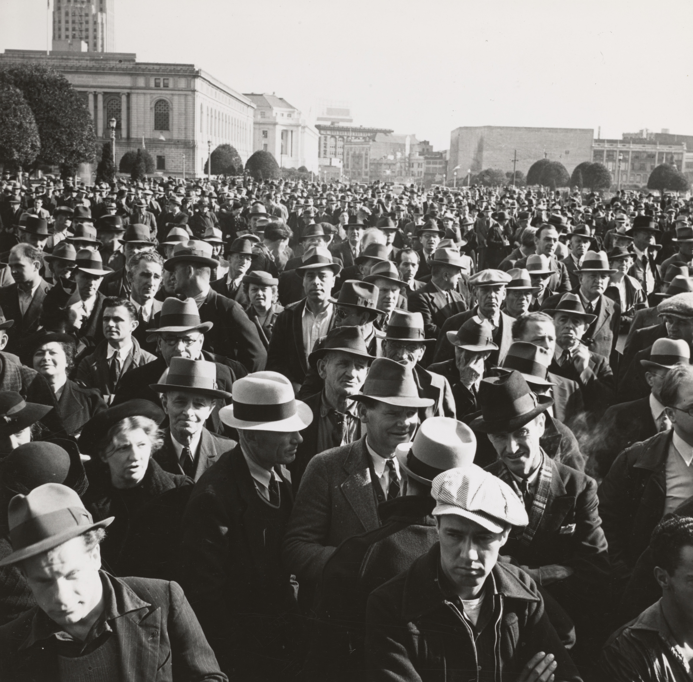
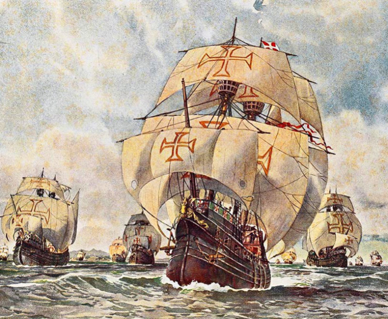
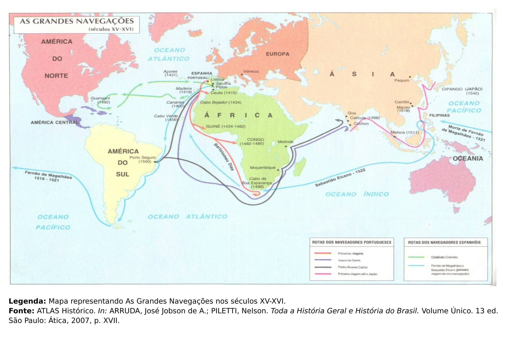

<!DOCTYPE html>
<html>
    <head>
            <link rel="stylesheet" href="style1.css">
        <meta charset="utf-8">
    <title>Escola Professora Anésia Sincorá</title>
    </head>

    <body>


    <nav>
      </nav>

      </html>
      <header>
        <div class="filtro">
        <h1 id="titulo">Escola Professora Anésia Sincorá</h1>
    
    </header>

    <main id="grid">

    <section class="cartao">
    
    <a href="index.html"><h2 class="botaomenu">HOME</h2></a>
    <a href="historia.html"><h2 class="botaomenu">TEORIA</h2></a>
    <h2>ATIVIDADES</h2>
    <a href="historia_ativ.html"><h3 class="botaomenu">6° ANO</h3></a>
    <a href="historia_ativ.html"><h3 class="botaomenu">7° ANO</h3></a>
    <a href="historia_ativ.html"><h3 class="botaomenu">8° ANO</h3></a>
    <a href="historia_ativ.html"><h3 class="botaomenu">9° ANO</h3></a>
</section></a>

</section>


    <section class="cartao">

    <h2 class="materia">ATIVIDADES</h2>
    <h3>ROTEIRO 2</h3> 
    <p class="texto">


    <h6>Caravelas com símbolo da Cruz Pátea.</h6>
<h4>(EF07HI02) Identificar conexões, interações e consequências do contato entre as sociedades do chamado Novo Mundo, da Europa, da África e da Ásia no contexto das navegações e indicar a complexidade das interações que ocorreram nos Oceanos Atlântico, Índico e Pacífico.</h4> 
<p>1 . Leia o texto da página:</p><p class="linkcentro"><a href="https://brasilescola.uol.com.br/o-que-e/historia/o-que-e-idade-moderna.htm">Idade Moderna</p></a> 
<p>2 . Veja o vídeo, anotando as principais informações sobre as Grandes Navegações.</p>
<iframe width="560" height="315" src="https://www.youtube.com/embed/lS_UYBPSTds" frameborder="0" allow="accelerometer; autoplay; encrypted-media; gyroscope; picture-in-picture" allowfullscreen></iframe>
<p>4 - Acompanhe o Mapa Mental.</p> 
<p>5 - Realize a avaliação, baseado em seus conhecimentos, clicando no link:</p><p class="linkcentro"><a href="https://docs.google.com/forms/d/e/1FAIpQLSeOjaj5lRpmR4y3h6mHWDMrZy0dAnbkzePnSYffpTGrHwGuFQ/viewform">AVALIAÇÃO</p></a> 
<p>BONS ESTUDOS!</p>

</section></a>
    <p></p>
    

</main>
</body>
